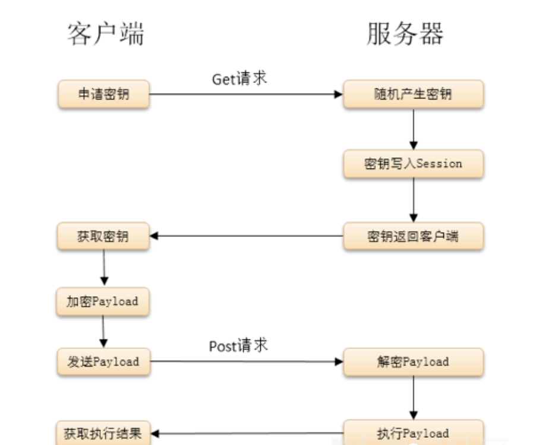
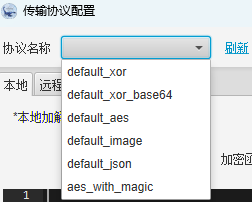

# 蚁剑
# 1、最明显的特征
蚁剑的一个显著特征是在请求体中包含 @ini_set("display_errors","0"); 这段代码，这段代码基本是所有 webshell 客户端 链接 PHP 类 webshell 都有的一种代码。
# 2、User-Agent 特征
默认的 USER-Agent 请求头是 antsword xxx，但是可以通过修改 /modules/request.js 文件中的请求 UA 绕过这一特征。
# 3、** _0x 开头**
蚁剑混淆加密后还有一个比较明显的特征，即参数名大多以 _0x.....= 这种形式（下划线可替换为其他）。以 _0x 开头的参数名，后面为加密数据的数据包也可识别为蚁剑的流量特征。
# 4、固定开头请求体
我们使用一句话木马上传 webshell，抓包后会发现每个请求体都存在以 @ini_set("display_errors","0");@set_time_limit(0) 开头。并且响应体的返回结果是 Base64 编码发混淆字符，格式为：随机数 + 结果 + 随机数。静态特征
蚁剑中 PHP 使用 assert、eval 执行；ASP 只有 eval 执行；在 JSP 中使用的是 Java 类加载（ClassLoader），同时会带有 Base64 编码解码 等字符特征。
# 哥斯拉
# 1、Cookie (强特征)
在请求包的Cookie中有一个非常致命的特征，最后的分号。标准的HTTP请求中最后一个Cookie的值是不应该出现;的
# 2、响应体特征 (强特征)
响应体的数据有一定特征，哥斯拉会把一个32位的md5字符串按照一半拆分，分别放在base64编码的数据的前后两部分。响应体的数据有一定特征，哥斯拉会把一个32位的md5字符串按照一半拆分，分别放在base64编码的数据的前后两部
# 3、Ua头（弱特征）
User-Agent字段（弱特征），如果采用默认的情况，会暴露使用的jdk信息。不过哥斯拉支持自定义HTTP头部，这个默认特征是可以很容易去除的
# 4、Accept字段（弱特征）
默认是Accept:text/html, image/gif, image/jpeg, *; q=.2, /; q=.2。同上，这个也可修改，只能作为辅助检测的特征
# 冰蝎
# 冰蝎2.0（已过时）

- 默认长连接，请求头和响应头里会带有Connection: Keep-Alive
- accept固定为Accept: text/html, image/gif, image/jpeg, *; q=.2, /; q=.2
# 冰蝎3.0
# 1、固定密钥
e45e329feb5d925b（$key="e45e329feb5d925b"; //该密钥为连接密码32位md5值的前16位，默认连接密码rebeyond）
# 2、随机User-Agent头
进行请求时内置了十几个User-Agent头，每次请求时会随机选择其中的一个
检测思路：如果同一个ip短时间多次使用不同的user-agent则重点关注
# 3、content-type（强特征）
连接jsp的webshell的请求数据包中的content-type字段常见为application/octet-stream。（强特征）
# 冰蝎4.0
1、提供了传输协议自定义的功能，让用户对流量的加密和解密进行自定义

# 2、Accept字段（弱特征）
通常是Accept: application/json, text/javascript, /; q=0.01 意思是浏览器可接受任何文件，但最倾向application/json 和 text/javascript。
检测思路：可以把这个字段作为一个弱特征，辅助其他特征来检测
# 3、Content-Type字段（弱特征）
通常是Content-type: Application/x-www-form-urlencoded
检测思路：可以把这个字段作为一个弱特征，辅助其他特征来检测
# 4、随机User-Agent头
与冰蝎的前述版本相似，进行请求时内置了十几个User-Agent头，每次请求时会随机选择其中的一个
检测思路：如果同一个ip短时间多次使用不同的user-agent则重点关注
# 5、高端口
连接的端口有一定的特征，冰蝎与webshell建立连接的同时，java也与目的主机建立tcp连接，每次连接使用本地端口在49700左右(就是比较大的端口)，每连接一次，每建立一次新的连接，端口就依次增加
检测思路：可以对符合该范围内的端口告警。
# 6、默认密钥
e45e329feb5d925b（$key="e45e329feb5d925b"; //该密钥为连接密码32位md5值的前16位，默认连接密码rebeyond）
# 7、PHP webshell 中存在固定代码
流量特征
$post=Decrypt(file_get_contents("php://input"));
eval($post);
检测思路：content字段中，将eval($post)作为流量特征纳入。
# 8、有固定的请求头和响应头
请求字节头：dFAXQV1LORcHRQtLRlwMAhwFTAg/M ，响应字节头：TxcWR1NNExZAD0ZaAWMIPAZjH1BFBFtHThcJSlUXWEd